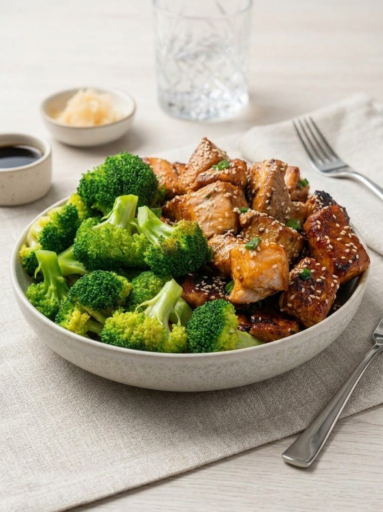

🍴 Sample recipe — paste this page's link into Pomegranate's "From URL" import to try it
Teriyaki Salmon Bites Bowl

Ingredients
- 6 salmon fillets
- 1 cup jasmine rice
- 1 lemon
- 1 bunch spring onions
- White sesame seeds
- Teriyaki sauce
- 2 heads broccoli
Method
- Cut the salmon into bite-sized cubes.
- Marinate the salmon in teriyaki sauce.
- Pan-fry the salmon, broccoli and spring onions in butter.
- Serve over rice with a lemon wedge, and sprinkle with sesame seeds.
This is a real recipe (and real photo) from Pomegranate's own kitchen, hosted here so onboarding
can point new users at a link that's always there to try — no third-party site, no risk of it
going dead one day.